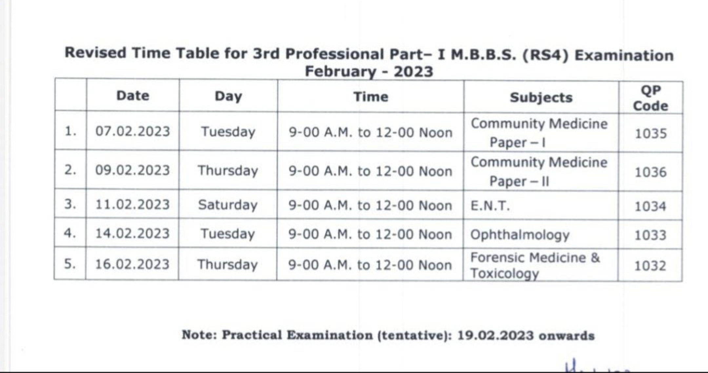
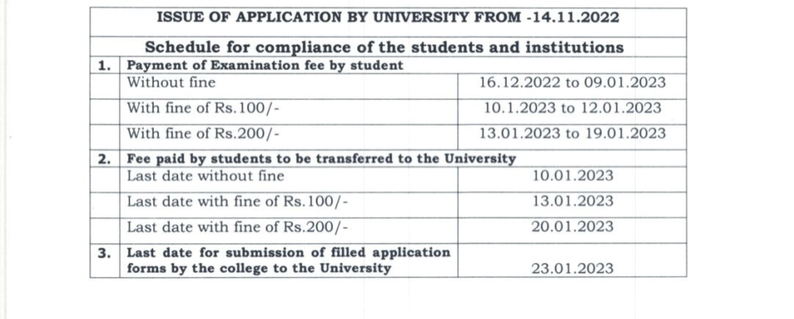

sign the petetion maximally more the number, louder the voice
As the academic year was scheduled for an year and it is shortened for 9 to 10 months, there was pressure on the medical college teachers and students to complete the portions.We should know that medical proffesion is something which cannot be deprived if its quality due to lack of time as the medical students studying in the medical colleges are the future doctors who serve thousands of patients.As we kniw indian medical syllabus is among the most diffucult subjects in the world preponing it will put undeu pressure on the students.

As mentioned in RGUHS rules a minimum period of 45 days should be given for students to study for supplementary exams for students who have been failed in the previous year. As the days given above are less than 45days, it would be highly diffult for the repeating students.Therefore we appeal on their behalf to postpone the exams.medical subjects are diffucult to read and understand we requast to postpone the exam. We on the behalf of the students stand with them to make them get the justice they truely deserve .

We represent the students on their behalf and represent in the judicial counsil for the postponement of the exam.We being an organisations full of medical proffesionals help you in your academic year.
SIGN THE PETETION..AND SHARE THE LINK WE SHALL HELP YOU TO POSTPONE THE EXAM